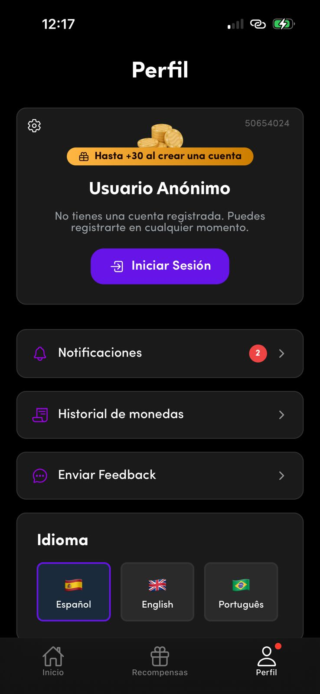
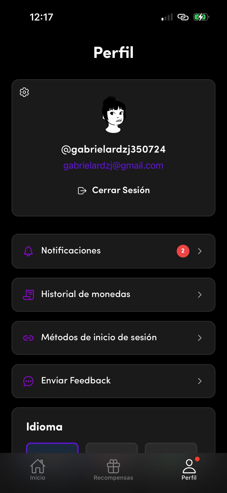
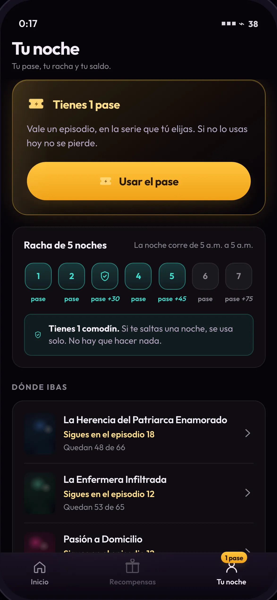
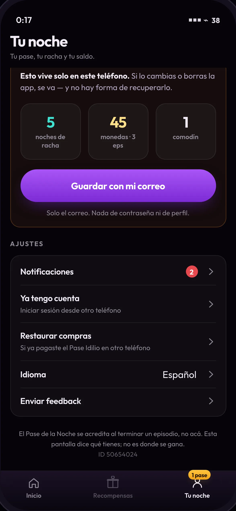
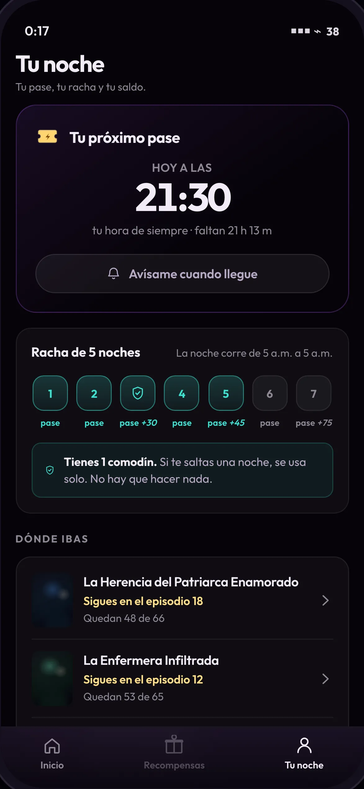
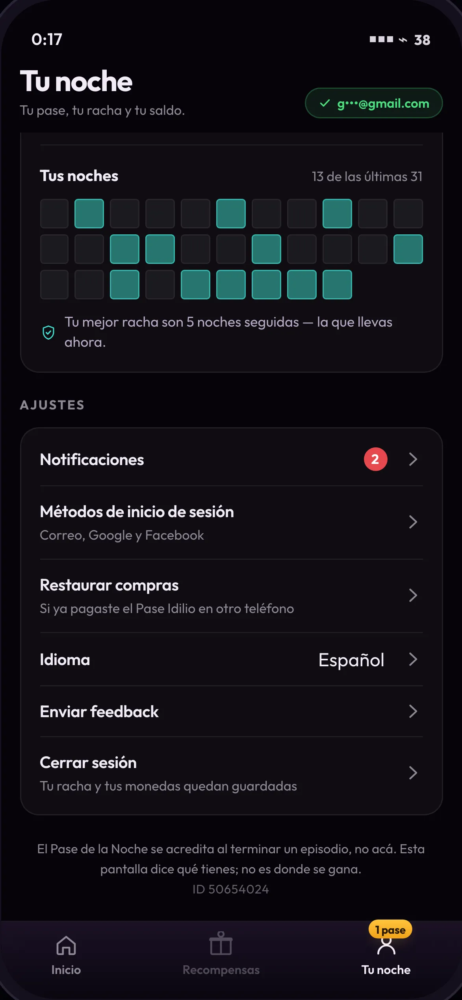
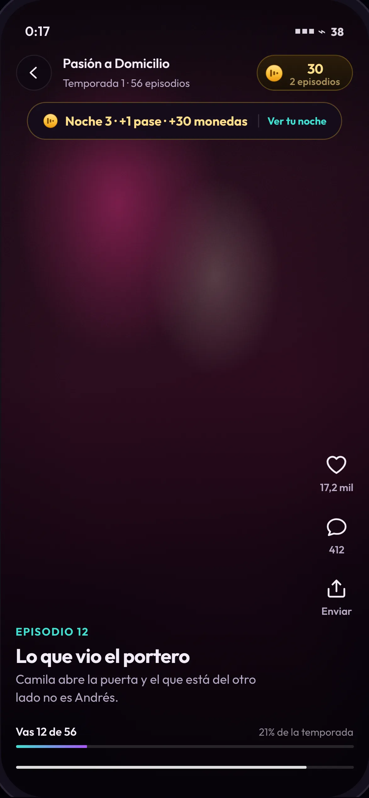

Anexo 7 · «Continuará», el Pase de la Noche
El 82% nunca abre el perfil. Es una pantalla de ajustes.
Idioma, notificaciones, métodos de inicio de sesión y registro: tareas que se resuelven una vez y no vuelven. Una pestaña permanente sostenida por tareas de una sola vez tiene el tráfico de una tarea de una sola vez.
Cómo leer esta página. Tres partes: qué hay hoy en la pantalla (con las capturas reales de la app), qué hacen los demás, y qué proponemos — con la aritmética de cuánta gente entraría de más, y por qué la respuesta honesta es 25% y no 40%. Todo lo que es medición va marcado como tal; todo lo que es supuesto, también.
01 · El antes
La pantalla que hay hoy
Capturas de la app nativa, 2-sep-2026 a las 12:17. Son del producto en uso, no material de la ficha de tienda.


Los cinco hallazgos
02 · Benchmark
Qué hacen los demás con esta misma pestaña
Cuatro apps de microdrama vertical —la categoría exacta— y cuatro vecinos que resolvieron el mismo problema de pestaña con más escala o más historia. La fuente mejor documentada no es prensa: es la política de privacidad de DramaBox, que describe su pestaña ruta por ruta porque la ley la obliga a decir dónde ejerce el usuario sus derechos.
| Producto | Cómo se llama | Qué contiene | Qué hace que entres | El invitado |
|---|---|---|---|---|
| ReelShort | Profile | Following · Earn Rewards · My List · Notifications, y My Wallet con saldo y botón Refill | El dinero y las fuentes gratuitas están ahí: es la caja | UID de invitado al instante. Banner de 20 monedas por iniciar sesión — incentivo, no requisito |
| DramaBox | Profile | user ID, apodo, foto · Watch history · My Wallet (transacciones, monedas ganadas y consumidas) · Settings. «My List» vive fuera | El historial y el libro mayor de la moneda | Se salta el perfil en el primer uso: abre directo en contenido |
| ShortMax / GoodShort | Me | Monedas + VIP, check-in diario, ruleta, historial | La escalera de login diario (día 1 → día 7) | Registro diferido, con bonos por vincular |
| FlexTV | Me | Variante del mismo patrón: monedas, VIP, tareas | Igual | Igual |
| Netflix | My Netflix antes: «Downloads» |
Vistos recientemente · descargas · tráilers · recordatorios · thumbs up · Continue Watching · My List | Es donde está lo que ya elegiste. Netflix no embelleció una pestaña: reemplazó la menos usada | No aplica |
| WEBTOON | My | Suscripciones, monedas, historial. Ahí vivía el Daily Pass hasta que lo retiraron el 29-may-2025 | El recurso diario | — |
| TikTok | Profile | Es el perfil de creador: tus videos, tus likes, tus guardados | Publicar, no consumir. Para el espectador puro es la pestaña más muerta de la app | — |
| Duolingo | Profile | Racha, XP, liga, logros, amigos | El metajuego entero vive ahí. El caso extremo del patrón contrario | — |
Los dos que hay que leer al revés. TikTok es la app vertical más grande del mundo y su perfil es de creador: para el 99% que solo mira es la pestaña más muerta, y a TikTok no le importa. Idilio se parece más a TikTok que a Duolingo en su patrón de uso —una mano, de madrugada, sin navegar—, y eso es un argumento de peso en contra de cargar el perfil. Y Duolingo tiene lo que Idilio no: una sesión que empieza y termina, con un momento de balance al final. Copiarlo sería copiar la pantalla sin el momento que la hace visitarse.
Los cinco patrones que se repiten
Y el contrapatrón de Idilio
| Patrón | Dónde vive en Idilio hoy | ¿Está en el perfil? |
|---|---|---|
| P1 · la caja | El historial de monedas sí; el saldo vive en el encabezado del home y en el muro | A medias |
| P2 · dónde ibas | En el riel «Seguir viendo» del home, entre ocho vitrinas más | No |
| P3 · el metajuego | En la pestaña Recompensas, que es otra pestaña | No |
| P4 · el registro | En el perfil, y bien: «Hasta +30 al crear una cuenta» | Sí |
| P5 · el vacío | No hay estados vacíos que resolver: la pantalla no tiene listas | N/A |
De las cinco razones por las que en esta categoría se entra a un perfil, el de Idilio tiene una y media — y la que tiene entera, el registro, es de un solo uso. Nadie se registra dos veces.
03 · El después
«Tu noche»: el libro mayor y la caja fuerte
La pestaña deja de ser un perfil y pasa a decir qué tienes, de dónde salió y cómo no perderlo. No es donde se gana —se sigue ganando en el player, al terminar un episodio—, y eso lo dice la propia pantalla en su última línea. Es el único trabajo que el muro no puede hacer: el muro aparece cuando el usuario quiere ver, nunca cuando quiere entender.
Sin cuenta · el 88% de la base
Un nombre que dice «Anónimo», un ID, y cuatro ajustes. Nada que cambie entre una visita y la siguiente.

El pase primero —es lo único accionable—, después la racha y dónde ibas. Cambia cada noche.


Con cuenta · el 12%
Un avatar, un @usuario y el correo. La cuenta se anuncia a sí misma, pero no rinde nada.

La pantalla, desplazada hasta el bloque que cambia: «Guardado» y el calendario de 31 noches — lo único que una cuenta habilita de verdad.
Por qué el mismo esqueleto y no dos pantallas. Dos pantallas distintas serían dos productos, y el invitado no podría ver qué gana registrándose: lo vería como una promesa en vez de como el mismo cuarto con una puerta más. Es también lo que hace legible la conversión — lo que cambia al guardar es exactamente un bloque.
El orden es el argumento
0/10 gris que usa el muro.Qué se conserva, y qué se deja fuera
| Del perfil actual | En la propuesta |
|---|---|
| Notificaciones (2) | Igual, con su distintivo numérico |
| Métodos de inicio de sesión | Igual; y para el invitado, «Ya tengo cuenta» |
| Enviar Feedback | Igual |
ID 50654024 | Se conserva, al pie y en letra chica. Soporte lo necesita; no compite con nada |
| «Hasta +30 al crear una cuenta» | Se conserva el patrón —bono, no muro— con la cifra cambiada: lo que se pone en juego es lo tuyo |
| Idioma · tres banderas desplegadas | Fila con su valor. Ocupaba un cuarto de la pantalla para un ajuste que se toca una vez en la vida |
| Historial de monedas | Sube al bloque del saldo, traducido: «llevas 135 monedas · 9 episodios ganados sin pagar». El dato ya existía; faltaba la traducción |
| Avatar, nombre y foto | Fuera. La identidad de esta pantalla es la racha — y el perfil real ya admite que no tiene qué decirle al 88%: le dice «Usuario Anónimo» |
| Ranking, tabla de posiciones, amigos | Fuera. De 11 p.m. a 2 a.m., consumo solitario, un género que carga pudor: acá no motiva, expone |
| Check-in / reclamar | Fuera. Es la decisión central de la intervención: no hay nada que reclamar. Un botón de check-in reintroduciría el 19% |
Una propuesta que amputa funciones que el producto ya envió no es un rediseño, es una maqueta. Por eso la lista de arriba empieza por lo que se queda.
04 · El mecanismo
Rediseñar la pantalla no lleva a nadie a la pantalla
Esta es la parte donde casi todas las propuestas de rediseño de perfil mienten. Lo que lleva gente son los enlaces que entran desde los momentos en que el usuario ya está mirando otra cosa. El rediseño es lo que hace que la visita valga la pena una vez que ocurrió.
Netflix es el precedente exacto: no embelleció «More» — eliminó la pestaña menos usada y la reemplazó por lo que el usuario ya había elegido. El cambio fue de contenido y de promesa, no de estética.
| Clave | Entrada | Alcance (medido) | En el POC |
|---|---|---|---|
| E2 | El acuse, tocable — al terminar el episodio: «Noche 3 · +1 pase · +30 monedas · Ver tu noche» | ≈100% de las noches en que el usuario ve algo: la acreditación es por construcción, no por reclamo | ✔ construida |
| E4 | El muro — un enlace discreto bajo la tira de racha | 100%: la sesión promedio son 14 episodios y el bloque gratis típico son 10 | declarada, no construida |
| E1 | La pestaña con distintivo — «1 pase» en vez de un punto rojo | 100% de quien ve el home | ✔ construida |
| E3 | El chip de saldo → «Tu economía» → «Ver tu noche completa» | Quien toca el chip: el usuario con más intención de todo el recorrido | ✔ construida |
| E5 | El push de la cita → enlace profundo a la pestaña | Quien activó el aviso | declarada, no construida |

Por qué E2 pesa más que las otras cuatro juntas. Es el único instante del recorrido en que la pregunta «¿cuánto llevo?» aparece sola, sin que nadie la provoque: el usuario acaba de ganar algo. Un acuse que no lleva a ningún lado deja esa pregunta sin responder y obliga a ir a buscar la respuesta — que es exactamente lo que el 82% no hace.
05 · Las métricas
Cuánta gente entraría de más, y hasta dónde es honesto prometer
El 18% de la base entra hoy al perfil. Sea p la probabilidad de que alguien que no entra hoy use al menos una de las entradas nuevas en el período de medición:
alcance nuevo = 18% + 82% × p
El 18% ya entra; las entradas nuevas solo pueden actuar sobre el 82% restante.
Cada objetivo exige su p. Y hay una vara para juzgarla, y sale del propio Idilio: un diálogo ineludible, que se interpone entre el usuario y la app y que regala monedas, convierte al 19%. Cualquier p por encima de esa cifra es afirmar que un conjunto de señales pasivas convierte mejor que un intersticial que regala dinero.
Qué tasa de uso exige cada objetivo
Probabilidad p que tendría que alcanzar la combinación de entradas nuevas, para cada objetivo de alcance de la pestaña.
Ver los datos en tabla
| Objetivo | Puntos sobre el 18% | p requerida | Contra la vara del 19% | Qué significa |
|---|---|---|---|---|
| 25% | +7 | 8,5% | ✔ defendible | Menos de 1 de cada 10 de los que hoy no entran usa alguna de las cinco entradas. Es menos de la mitad de lo que consigue el intersticial |
| 30% | +12 | 14,6% | ✔ al límite | Posible, pero sin margen para que ninguna entrada falle |
| 40% | +22 | 26,8% | ✗ no defendible | Un 41% por encima de lo que consigue un diálogo ineludible que regala monedas |
| 60% | +42 | 51,2% | ✗ sin precedente | Más del doble de la conversión del intersticial. No hay precedente en el producto ni en la categoría |
p = (objetivo − 18%) ÷ 82%. Ninguna de estas cifras es una medición: la aritmética está a la vista para que cualquiera meta la suya.
La única cifra que puedo defender: 25%. Son 7 puntos de la base, y decirlo así es parte del argumento. Quien prometa duplicar la entrada al perfil con un rediseño está prometiendo contra el único dato de comportamiento que este producto tiene medido — y contra un producto que ya tiene el punto rojo puesto.
Pero «entradas» es la métrica de la pregunta, no la del problema
Más visitas a una pantalla es una métrica que se infla con un punto rojo y que no significa nada. Un producto de 22 minutos por sesión a la 1 a.m. no gana nada llevando gente a mirar estadísticas. Las cuatro que cuentan:
| Métrica | Por qué | Objetivo |
|---|---|---|
| Visitas útiles / visitas | Una visita útil termina en: usar el pase, ver un anuncio, retomar una serie desde «Dónde ibas», guardar la cuenta o activar el aviso | > 50% por debajo, la pestaña volvió a ser un museo |
| Invitado → cuenta | Es lo que esta pantalla habilita. Hoy el registro existe y está bien resuelto, pero lo que ofrece es un bono genérico; la propuesta ofrece lo que ya es tuyo | Sobre la base del 88% |
| CTR del distintivo, semana a semana | El fracaso típico de un distintivo no es que no funcione: es que deje de funcionar. Y en Idilio el punto rojo ya lleva tiempo puesto | Caída < 30% en 4 semanas |
| Episodios por sesión | Guardarraíl. Esta pantalla compite con ver a la 1 a.m. Si la gente entra a mirar su racha en vez de ver el episodio siguiente, la intervención se paga con la métrica que importa | No debe bajar. si baja, se revierte |
Qué falsaría la propuesta
06 · Para seguir
Qué se construyó, y dónde está
Las dos pantallas no son maquetas: son la pestaña funcionando dentro del prototipo, con el mismo estado, la misma economía y el mismo reloj que el resto del POC. Se auditan con axe (0 violaciones WCAG A/AA) y entran en el export de flujos como el flujo f8-tu-noche.
Fuentes
- Primarias · capturas de la app nativa de Idilio: la pestaña Perfil en sus dos estados (2-sep-2026) y la pestaña Recompensas, en
docs/00-dogfooding/evidencia/. - Documentación de producto · DramaBox describe la arquitectura de su pestaña Profile ruta por ruta en su política de privacidad — support.dramaboxdb.com/privacy.html
- Netflix reemplaza «Downloads» por «My Netflix», 24-jul-2023 — TechCrunch · Variety
- ReelShort vs DramaBox · patrones de re-enganche, perfil e invitado — Oyelabs
- WEBTOON retira el Daily Pass, 29-may-2025 — Anime News Network · Comics Beat
- DramaBox · fuentes de monedas y VIP — ReelPulse · quejas de saldos perdidos en cuentas de invitado — Unstar
Lo que no pude verificar
Los perfiles de ReelShort, DramaBox, ShortMax, GoodShort y FlexTV con sesión iniciada: sus webs son sitios de SEO con reproductor, sin la pestaña. Lo que hay de ellos sale de documentación y teardowns, no de dogfooding. Y ninguna tasa de toque de las entradas E1–E5 — por eso la aritmética está a la vista en vez de escondida en una conclusión.